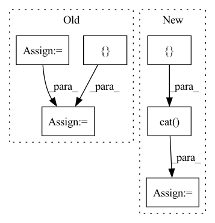

Pattern ID :2214
Before Change
for idx in range(self.depth):
if stacked is None:
stacked = x
else:
stacked = torch.cat([ stacked, x = x
return output
After Change
output (batch_size, out_channels, n_bins, n_frames)
x = input
stacked = []
output = []
stacked.append(input)
for idx in range(self.depth):
if idx != 0:
x = torch.cat(stacked, dim=1)
x = self.net[idx](x)
stacked.append(x)
output = torch.cat( stacked[1:], dim=1)
return output
class MultiDilatedConvBlock(nn.Module):In pattern: SUPERPATTERN
Frequency: 4
Non-data size: 6
Instances Fragment ID: 14196779
Project Name: tky823/dnn-based_source_separation
Commit Name: 08ed4eac522e740d5bb22e99fb4f60bd3f8aadf1
Time: 2021-03-12
Author: 40362510+tky823@users.noreply.github.com
File Name: src/models/d3net.py
M Class Name: D2Block
N Class Name: D2Block
M Method Name: forward(2)
N Method Name: forward(2)
M Parent Class: nn.Module
N Parent Class: nn.Module
M File Name: src/models/d3net.py
N File Name: src/models/d3net.py
M Start Line: 110
M End Line: 120
N Start Line: 165
N End Line: 177
Before Change
rel_embedded = self.relation_embeddings(relation_batch).view(-1, 1, self.img_height, self.img_width)
// batch_size, num_input_channels, 2*height, width
stacked_inputs = torch.cat([ e1_embedded, rel_embedded += self.b.expand_as(x)
pred = F.sigmoid(x)
return predAfter Change
// batch_size, num_input_channels, width, height
heads_embs = self.entity_embeddings(heads).view(-1, 1, self.img_height, self.img_width)
relation_embs = self.relation_embeddings(relations).view(-1, 1, self.img_height, self.img_width)
tails_embs = self.entity_embeddings(tails).view(-1, self.embedding_dim)
// batch_size, num_input_channels, 2*height, width
stacked_inputs = torch.cat([ heads_embs, relation_embs)
// batch_size, num_input_channels, 2*height, width
stacked_inputs = self.bn0(stacked_inputs)
// batch_size, num_input_channels, 2*height, width
x = self.inp_drop(stacked_inputs)
// (N,C_out,H_out,W_out)
x = self.conv1(x)
x = self.bn1(x)
x = F.relu(x)
x = self.feature_map_drop(x)
// batch_size, num_output_channels * (2 * height - kernel_height + 1) * (width - kernel_width + 1)
x = x.view(batch_size, -1)
x = self.fc(x)
x = self.hidden_drop(x)
if batch_size > 1:
x = self.bn2(x)
x = F.relu(x)
scores = torch.sum(torch.mm(x, tails_embs.transpose(1, 0)), dim=1)
predictions = F.sigmoid(scores)
loss = self.compute_loss(predictions, labels)
return loss
Fragment ID: 14196782
Project Name: pykeen/pykeen
Commit Name: e310dc04ccd0763bef25540fb0a19a7423a27a94
Time: 2018-09-19
Author: ali-mehdi@live.de
File Name: src/kg_embeddings_model/conv_e.py
M Class Name: ConvE
N Class Name: ConvE
M Method Name: forward(3)
N Method Name: forward(3)
M Parent Class: nn.Module
N Parent Class: nn.Module
M File Name: src/kg_embeddings_model/conv_e.py
N File Name: src/kg_embeddings_model/conv_e.py
M Start Line: 116
M End Line: 151
N Start Line: 114
N End Line: 153
Before Change
def forward(self, a, b):
output_a = self.model_a(**a)
output_b = self.model_b(**b)
outputs = []
for i in range(len(output_a)):
outputs.append(output_a[i] + output_b[i])
return outputsAfter Change
self.loss_fct = nn.CrossEntropyLoss()
def forward(self, a, b):
labels = a["labels"]
a.pop("labels")
b.pop("labels")
output_a = self.model_a(**a)[1] // [bs, seq_len, 768]
output_b = self.model_b(**b)[1]
output = torch.cat([ output_a, output_b, output_a-output_b, dim=1)
logits = self.linear(output)
loss = self.loss_fct(logits, labels)
return loss, logits
Fragment ID: 14196815
Project Name: prajjwal1/fluence
Commit Name: 384e5722f994d3a39d54cf057a0a48a996206bbf
Time: 2020-08-03
Author: prajjwalin@protonmail.com
File Name: fluence/models/siamese_model.py
M Class Name: SiameseTransformer
N Class Name: SiameseTransformer
M Method Name: forward(3)
N Method Name: forward(3)
M Parent Class: nn.Module
N Parent Class: nn.Module
M File Name: fluence/models/siamese_model.py
N File Name: fluence/models/siamese_model.py
M Start Line: 22
M End Line: 28
N Start Line: 24
N End Line: 32
Before Change
for idx in range(self.num_blocks):
if stacked is None:
stacked = x
else:
stacked = torch.cat([ stacked, x = x
return output
After Change
output (batch_size, out_channels, n_bins, n_frames)
x = input
stacked = []
stacked.append(input)
for idx in range(self.num_blocks):
if idx != 0:
x = torch.cat(stacked, dim=1)
x = self.net[idx](x)
stacked.append(x)
output = torch.cat( stacked[1:], dim=1)
return output
class D2Block(nn.Module): Fragment ID: 14196802
Project Name: tky823/dnn-based_source_separation
Commit Name: 08ed4eac522e740d5bb22e99fb4f60bd3f8aadf1
Time: 2021-03-12
Author: 40362510+tky823@users.noreply.github.com
File Name: src/models/d3net.py
M Class Name: D3Block
N Class Name: D3Block
M Method Name: forward(2)
N Method Name: forward(2)
M Parent Class: nn.Module
N Parent Class: nn.Module
M File Name: src/models/d3net.py
N File Name: src/models/d3net.py
M Start Line: 62
M End Line: 72
N Start Line: 114
N End Line: 125